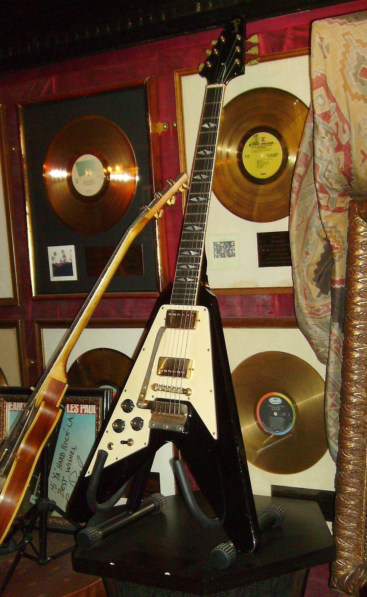
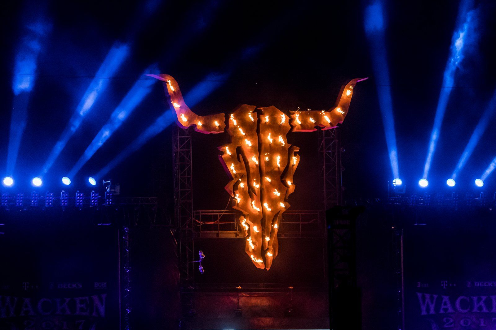

1970 年 2 月 13 日，星期五。
一张唱片在英国发行。唱针落下，先听到的不是音乐，而是雨声、远处的雷，和一口教堂的钟，慢慢地敲。然后，一把调低了音的电吉他弹出三个音：低、高八度、再往下掉进一个刺耳的音程里。那张唱片和乐队同名，都叫 Black Sabbath。
乐队来自伯明翰的阿斯顿区，英格兰中部的工业城市。吉他手 Tony Iommi 十七岁那年，在一家金属冲压厂上最后一天班时，机器切掉了他右手中指和无名指的指尖。他是左撇子，右手正是按弦的手。他用融化的塑料瓶给自己做了两个指套，又把弦调松，让按弦不那么疼。那种低沉、粘稠、像工厂一样轰鸣的声音，有一部分就是这么来的。
五十五年后，2025 年 7 月 5 日，四位原始成员回到阿斯顿，在离他们长大的街道不远的维拉公园球场做了最后一场演出。十七天后，主唱 Ozzy Osbourne 去世。
再讲讲朋克金属
这是我在朋克那章开头问的问题。当时得到的回答是：朋克反对技巧，金属崇拜技巧，两者的价值观几乎相反。这一章就从那里接着讲。
不过“几乎相反”不等于“互不往来”。1980 年代初，美国的硬核朋克和英国的金属新浪潮在同一批年轻人的唱机上相遇，生出了激流金属（thrash metal）；朋克那章讲的“速度”和“自己动手”，后来都被金属继承了下来。到了这一章的后半，你会看到两个家族在“快”这件事上走到了一起。
这一章先拆金属的“零件”：一个音程、几种暗色的音阶、一种奔马般的节奏、越来越快的鼓、越来越低的弦、从喉咙深处发出的嗓音；然后讲它和古典音乐的关系、它的乐迷部落，最后去看全世界和中文世界的金属。
I · what什么是金属
“heavy metal”这个词最早是化学名词，指铅、汞这类重金属。1960 年代，作家 William Burroughs 在小说里把它用作一种意象；1968 年，Steppenwolf 的《Born to Be Wild》里唱到“重金属的雷声”，形容摩托车的轰鸣。到 1970 年代初，乐评人开始用它来称呼 Black Sabbath、Led Zeppelin 这一类越来越重的乐队，后来简称为“金属”（metal）。
硬摇滚那章说过一个粗略的区分：硬摇滚还在“摇摆”，金属开始“砸”。具体一点，金属通常有这些特征：
- 更重的失真：吉他的失真开得比硬摇滚大得多，声音更厚、更“糊”、更接近持续的轰鸣
- 闷音 riff：大量使用闷音和低音弦上的快速重复，节奏像机器一样精确
- 离开布鲁斯：布鲁斯的“晃”和蓝调音越来越少，取而代之的是小调、三全音和来自古典的音阶
- 速度和技巧：越来越快的鼓、越来越难的吉他独奏，演奏能力被当作荣誉
- 黑暗的题材：战争、神话、恐惧、死亡、宗教、社会的阴暗面，而不是派对和公路
- 家族庞大：几十年里分出了几十个子类型，乐迷对子类型的划分非常认真
这张家谱也是这一章的路线图。家谱只是一种整理方式：很多乐队会被归进好几个类型，乐迷之间关于“这到底算不算某某金属”的争论，几十年来从没停过。
II · tritone“魔鬼的音程”
开头那张唱片里的“刺耳的音程”，叫三全音（tritone）：两个音相隔三个全音，也就是六个半音，正好是一个八度的一半。比如 E 和 A♯（B♭）。
布鲁斯那章讲过强力和弦用的是“五度”：E 和 B，相隔七个半音，听起来稳定、空、有力量。三全音只比五度少一个半音，听感却完全不同：它不稳、不安，像一个没说完的问题。因为它正好把八度对半切开，从 E 往上数六个半音是 B♭，从 B♭ 再往上数六个半音又回到 E，它没有“哪一边是家”。
它有一个吓人的外号：“音乐中的魔鬼”（diabolus in musica）。常见的说法是中世纪教会“禁止”使用三全音。这个说法夸大了：当时的理论家确实要求避开它，主要是因为在那套音乐体系里它难唱、难听；“音乐中的魔鬼”这个名字，目前能找到的记载要到 18 世纪才出现。不过金属乐队很乐意接受这个传说，它和金属想要的那种不安、危险的气氛正好吻合。
本书仿照开头那种气氛写的一段原创片段：雨、雷、钟，然后是一个慢速 riff。注意 riff 第三个音：从 E 跳到 A♯，就是三全音。这段速度很慢，金属的这一支后来叫“毁灭金属”（doom metal），讲究的就是慢和沉。
E + B，强力和弦的骨架：稳、空、有力。
E + A♯，只差一个半音，却立刻不安。
两种音程在同一个 riff 里交替出现。
III · modes暗色的音阶
布鲁斯和硬摇滚的独奏大多用五声音阶，带着“蓝调音”的弯曲。金属慢慢离开了这条路，转向几种更“暗”的音阶。这里只讲最常用的三种，都从 E 出发，区别只在两三个音上：
- 自然小调（爱奥利亚调式）：最普通的小调，悲伤但不怪
- 弗里吉亚调式：把小调的第二个音降低半音。从根音往上只走半音就到了第二个音，那一下“挤”在一起的感觉非常暗、非常压迫，激流和死亡金属大量使用
- 弗里吉亚属调式：在弗里吉亚的基础上，再把第三个音升高半音，第二音和第三音之间就出现一个“增二度”的大跳。它在西班牙弗拉门戈和中东、北非的音乐里很常见，听起来有一种异域的、仪式般的味道。它其实就是和声小调从第五个音开始的音阶，巴洛克那章讲过和声小调
暗，但还算“正常”。
第二个音降低：一下子压迫起来。
再升高第三个音：异域、仪式感。
低音的 E 一直在“咚咚”地闷音，这叫持续音（pedal）：金属 riff 最常见的写法之一，不停回到最低的空弦，中间插进旋律音。
IV · NWOBHM新浪潮：奔马与双吉他
1970 年代中期，朋克在英国兴起，很多人认为长发、长独奏的重型摇滚已经过时了。但在英格兰的工业城镇里，一批更年轻的乐队在小酒吧里继续演出，他们吸收了朋克的速度和自己动手的劲头，却保留了金属的技巧和排场。1979 年，英国音乐周刊《Sounds》给这股潮流起了一个很长的名字：英国重金属新浪潮（New Wave of British Heavy Metal），简称 NWOBHM。
这一波里最有名的是伦敦的 Iron Maiden。更早成名、同样来自伯明翰的 Judas Priest 也在这一时期达到顶峰，他们还定下了金属的“制服”：黑皮衣、铆钉、皮带、手腕上的金属扣。“金属”从此不只是一种声音，也是一种样子。
奔马节奏（gallop）
把每一拍分成“一个八分音符 + 两个十六分音符”，弹出来就是“哒——哒哒、哒——哒哒”，像马在奔跑。这就是奔马节奏。它让 riff 一直往前冲，又比单纯的八分音符多了起伏。Iron Maiden 的贝斯手 Steve Harris 把它用到了极致，他的贝斯常常和吉他一起奔跑。
双吉他和声
NWOBHM 乐队大多有两把主音吉他。它们不只是轮流独奏，还常常一起弹同一段旋律，但一高一低，相隔三度。这种“和声双吉他”（twin guitar harmony）在 1970 年代的 Thin Lizzy、Wishbone Ash 那里已经出现，Iron Maiden 和 Judas Priest 让它成了传统金属的标志之一。
直直地往前走。
哒——哒哒。
奔马上面加一条旋律。
第二把在上方三度和声。

V · speed更快：激流金属与双踩
1980 年代初，美国西海岸的一群少年同时迷上了两样东西：英国的金属新浪潮，和朋克那章讲的美国硬核朋克。他们把前者的 riff 和独奏，用后者的速度弹出来，这就是激流金属（thrash metal）。旧金山湾区和洛杉矶是两个中心，后来被称为“四巨头”的 Metallica、Slayer、Megadeth、Anthrax 都在 1980 年代初出道。
激流金属的几个“零件”：
- 全下拨：右手每一下都从上往下拨弦，而不是一上一下交替。更累，但每个音都更重、更整齐。快速的全下拨闷音，是激流金属吉他的基本功
- “砰嚓”节奏：底鼓和军鼓快速交替，每个八分音符换一下。这个节奏直接来自硬核朋克，乐手们叫它 skank beat 或 thrash beat
- 双踩：底鼓用两个踏板（或一个双踏板）连续踩出十六分音符，像机关枪。底鼓从“打拍子”变成了一条持续的低音轰鸣
- 冲击鼓（blast beat）：再往后，死亡金属和黑金属的鼓手把底鼓、军鼓、镲片都打成极快的连续音符，几乎听不出拍子，只剩一片“风暴”
约 120 BPM，硬摇滚那章的基本节奏。
约 190 BPM，砰嚓节奏 + 全下拨闷音。
底鼓变成十六分音符的轰鸣。
一片风暴，拍子快要看不见。
朋克那章的 Lab 里也有“砰嚓节奏”。对比一下：同样的鼓，朋克上面是三个开放的强力和弦，激流上面是紧密的闷音 riff。
VI · extreme更极端：死亡金属与黑金属
激流金属之后，有人想走得更远。1980 年代中后期到 1990 年代初，两条“极端金属”的路线几乎同时出现，听起来都很吓人，但它们想要的东西很不一样。
死亡金属：低、重、精确
死亡金属（death metal）的中心在美国佛罗里达州的坦帕，以及瑞典的斯德哥尔摩。它把激流金属调得更低、更重、更复杂：大量弗里吉亚和半音的 riff，频繁的变速，冲击鼓和双踩，以及一种新的唱法：嘶吼（growl），从胸腔和喉咙深处发出低沉、粗糙的声音，几乎听不出歌词的音高。
嘶吼不是乱喊。职业歌手会专门训练呼吸和发声位置，让这种声音能连续唱一整场而不伤嗓子。它在死亡金属里的作用，更像一件乐器：人声不再负责唱旋律，旋律交给吉他，人声负责“质感”。
黑金属：冷、远、粗糙
黑金属（black metal）的名字来自英国乐队 Venom 1982 年的一张专辑，真正成形是在 1990 年代初的挪威。它的声音和死亡金属几乎相反：
- 颤音拨弦（tremolo picking）：右手极快地上下拨同一个音或和弦，把吉他变成一片持续的“沙沙”声，旋律在这片沙子里慢慢移动
- 刻意粗糙的录音：高频刺耳、低频很少，像从很远的地方传来，这是故意的，用来营造寒冷、荒凉的气氛
- 尖叫式的嗓音：比死亡金属的嘶吼更高、更尖
- “尸妆”：黑白的脸部彩绘
早期挪威黑金属圈还和一系列刑事案件联系在一起，包括焚烧教堂和谋杀，一些人物持有极端的政治观点。这段历史在乐迷中至今充满争议，很多后来的黑金属乐手明确和它划清界限。这一章不推荐那几个人的作品，只讲它留下的声音。今天，黑金属已经是一个非常多样的类型，有人把它和民谣、后摇、交响乐混在一起。
同一条旋律，用普通的“啊”唱出来。
同样的节奏，只剩低沉粗糙的质感。
黑金属式：快速拨弦 + 粗糙的录音感。
浏览器合成的“嘶吼”只能模仿个大概：一个低沉的声音加上噪声和失真。真正的嘶吼复杂得多，去听推荐曲目里的 Death。
VII · low更低：七弦、八弦与 djent
还记得开头 Tony Iommi 为了手指不疼，把弦调松吗？后来的金属乐手发现，调低本身就是一种力量：弦越低，声音越沉、越暗，闷音越像拳头砸在胸口。金属吉他的“往下走”大致有这几步：
- 整体降调：所有弦一起调低半音、一个全音甚至更多
- Drop D：只把最低的 E 弦调低到 D。这样最低三根弦的空弦正好是一个强力和弦，一根手指横按就能弹，换和弦极快
- 七弦吉他：在最低音再加一根弦，通常是 B。1990 年代的新金属（nu metal）乐队 Korn 让七弦吉他流行起来
- 八弦吉他：再加一根，最低到升 F，已经接近贝斯的音域
最低音约 82 赫兹。
最低音约 73 赫兹。
最低音约 62 赫兹。
用手机外放可能几乎听不出差别，因为手机喇叭发不出这么低的声音。最好用耳机或音箱。
djent：在 4/4 拍里绕圈
“djent”是一个拟声词，模仿高增益、低调弦的吉他闷音那一声又短又硬的“蹬”。这个词主要和瑞典乐队 Meshuggah 的声音联系在一起，2000 年代后期在网络上的年轻乐手中流行开来。
它最迷人的地方在节奏。鼓的镲片和军鼓老老实实地打 4/4 拍，吉他和底鼓却在弹一个长度不是 4 拍的循环，比如 6 个十六分音符一圈。于是吉他的重音每一小节都落在不同的位置，像是“错位”了，要过好几个小节才重新对齐。你的脚跟着鼓点，你的头跟着吉他，两边都对，但不同步。
跟着军鼓数“1、2、3、4”，再试着跟着吉他点头。上面三个格子标出三小节一轮，第四小节吉他和鼓重新同时从头开始。整段播放两轮。
VIII · classical和巴赫握手：新古典与交响
金属崇拜技巧，于是它很自然地向另一种崇拜技巧的音乐学习：古典音乐，特别是巴洛克。硬摇滚那章说过，Deep Purple 的风琴手和吉他手已经在独奏里用巴洛克式的琶音。到了 1980 年代，这条路被走到了尽头：
- 新古典金属（neoclassical metal）：1980 年代初从瑞典去美国发展的吉他手 Yngwie Malmsteen，把巴赫和帕格尼尼的小提琴写法搬到电吉他上，用和声小调、快速音阶和扫拨（sweep picking：拨片像扫帚一样连续扫过几根弦，弹出极快的分解和弦）。Ozzy Osbourne 单飞后的吉他手 Randy Rhoads 也深受古典训练，他 1982 年在一次飞机事故中去世，年仅 25 岁
- 交响金属（symphonic metal）：1990 年代后期起，欧洲乐队把真正的管弦乐团、合唱团和歌剧式女高音加进金属。芬兰的 Nightwish、荷兰的 Within Temptation 是代表
巴洛克那章讲过和声小调和它那个升高的第七音：它让 V 级和弦变成大三和弦，制造出强烈的“想回家”。新古典金属的独奏几乎全建立在它上面。一个 18 世纪的和声习惯，在 20 世纪末的电吉他上又活了一次。
Am、Dm、E、Am，每个和弦快速上下扫一遍。注意 E 和弦里的升 G：和声小调的那个音。
弦乐、合唱和一条女高音式的旋律，底下是金属的闷音和双踩。
IX · tribe部落：金属乐迷
如果说朋克是一种态度，金属更像一个部落。它有自己的手势、服装、仪式和“圣地”，而且非常长寿：很多人十几岁迷上金属，五十岁时还穿着同一件补丁背心去音乐节。
- 甩头（headbanging）：跟着 riff 上下甩头。长发是这个动作最好的“放大器”
- “恶魔角”手势：伸出食指和小指，其余手指收拢。1979 年加入 Black Sabbath 接替 Ozzy 的主唱 Ronnie James Dio 让它在金属圈流行开来；他说这个手势来自他的意大利裔祖母，在意大利民间是用来挡“邪眼”的
- 战衣（battle vest，德语叫 Kutte）：剪掉袖子的牛仔或皮背心，缝满乐队补丁。每一块补丁都是一次表态：我听什么、我站在哪一边。本章下面的曲目，就做成了一件战衣上的补丁
- 冲撞区（mosh pit）：台前的一块空地，乐迷在里面互相冲撞、绕圈跑。它来自硬核朋克的现场，激流金属把它发扬光大。看起来很乱，其实有不成文的规矩：有人摔倒，周围的人要马上把他拉起来
breakdown：给冲撞区的信号
很多金属和金属核（metalcore）歌曲里有一段breakdown：速度突然减半，吉他在最低的弦上弹出有空隙的闷音，每一下都和底鼓一起砸下来。它几乎是写给台下的：一听到它，冲撞区就开始动。
前两小节是正常速度的双踩；然后一记镲片，速度感减半，闷音之间的空白变多。空白越多，每一下就砸得越重。
圣地
德国北部的小村庄瓦肯（Wacken）只有两千来个居民。1990 年，两个本地年轻人在村外的砂石坑里办了一个小型金属音乐节，只来了几百人。三十多年后，瓦肯露天音乐节（Wacken Open Air）每年八月吸引约八万人，是全世界最有名的金属音乐节之一。法国的 Hellfest、英国的 Download 也是乐迷心中的“朝圣地”。

X · world全世界的金属
金属可能是全球化最彻底的摇滚分支。它的“零件”很容易和各地的民间音乐拼在一起：一个民族乐器、一种本地的音阶、一段传说，放进金属的框架里就是新的东西。
- 北欧：芬兰常被说成是人均金属乐队最多的国家。2006 年，芬兰乐队 Lordi 穿着怪兽服装赢得了欧洲歌唱大赛。挪威、瑞典除了黑金属和死亡金属，还有大量把维京传说和民谣乐器写进金属的“维京金属”“民谣金属”
- 巴西：Sepultura 来自米纳斯吉拉斯州，1996 年的专辑《Roots》加入了巴西的打击乐，还和当地原住民 Xavante 人一起录音
- 日本：X Japan 在 1980 年代末把速度金属、古典钢琴和华丽的舞台造型结合起来，是“视觉系”的源头之一。2010 年成立的 BABYMETAL 把偶像流行和金属拼在一起，起初被很多金属乐迷嘲笑，后来却登上了世界各大音乐节
- 蒙古：The HU 用马头琴、口簧和呼麦（一种一个人同时发出两个音的喉音唱法）演奏金属，2018 年发布的视频让全世界听到了“蒙古金属”
这些乐队的共同点是：金属提供了骨架，本地的声音提供了血肉。这和布鲁斯那章讲的“非洲节奏遇上欧洲和声”，其实是同一种事情。
XI · china中文世界的金属
硬摇滚那章提到，唐朝乐队比黑豹更偏向金属。这支 1988 年在北京成立的乐队，1991 年底在国内发行了首张专辑《梦回唐朝》（海外版 1992 年），通常被认为是第一张中文重金属专辑。它的做法很像上一节说的“骨架与血肉”：金属的吉他和鼓，加上古诗词式的歌词、京剧式的念白和五声音阶的旋律。乐队的创始吉他手之一郭怡广（Kaiser Kuo）是在美国长大的华裔，后来又组建了春秋乐队。
1990 年代的北京还出现了更“正宗”的金属乐队，比如高旗的超载乐队。2000 年起，北京迷笛音乐学校办的迷笛音乐节，成了中国金属和朋克乐队最重要的舞台之一。台湾的闪灵乐队（ChthoniC）把台湾民间传说、道教仪式和二胡写进旋律黑金属，在国际金属圈很有名。
底下是普通的金属闷音 riff 和双踩，上面是一条只用五个音（E、G、A、B、D）的旋律，用一个带滑音和揉弦的合成音色来模仿拉弦乐器。注意旋律里的滑音：从下面滑进一个音，是很多中国乐器的习惯。
XII · listen听：本章十二首曲目
按时间顺序听，从伯明翰的雨夜，一直到蒙古的草原。每块补丁都提供 YouTube、网易云和 QQ 音乐的搜索链接。部分曲目非常吵，第一次听可以先把音量调小。
XIII · practice练 · 术语表
练习 1：找三全音
听《Black Sabbath》的开头 riff，再回去听 Lab II。三个音里，哪两个音之间是三全音？
练习 2：数奔马
听《The Trooper》，跟着吉他念“哒——哒哒”。贝斯是不是也在跑？两把吉他什么时候开始和声？
练习 3：速度阶梯
按顺序听《Breaking the Law》《Master of Puppets》《Raining Blood》《Pull the Plug》，每首只听一分钟。对照图 5，判断每首用了哪种鼓的节奏型。
练习 4：跟着鼓，还是跟着吉他？
听《Bleed》，先只跟着军鼓数四拍，再只跟着吉他和底鼓点头。你能感觉到两者在什么时候“对齐”吗？
练习 5：骨架与血肉
对比《梦回唐朝》和 The HU 的《Wolf Totem》：哪些声音来自金属？哪些来自本地的传统？
术语表
- 重金属
- 1970 年前后从硬摇滚中分化出来的更重、更暗、更少布鲁斯色彩的摇滚
- 三全音
- 相隔六个半音的音程，正好是八度的一半，听感不稳定；外号“音乐中的魔鬼”
- 毁灭金属
- 以极慢速度和沉重低音为特点的金属分支
- 持续音
- 在 riff 里反复回到的同一个低音，通常是最低的空弦
- 弗里吉亚调式
- 第二音比自然小调低半音的音阶，听感暗而压迫
- 弗里吉亚属
- 和声小调的第五种调式，带一个增二度，有异域色彩
- NWOBHM
- 英国重金属新浪潮，1970 年代末到 1980 年代初的英国金属运动
- 奔马节奏
- 每拍一个八分音符加两个十六分音符的节奏型
- 双吉他和声
- 两把吉他同时弹同一旋律，相隔三度等音程
- 激流金属
- 1980 年代初把金属和硬核朋克的速度结合起来的类型
- 全下拨
- 每一下都向下拨弦的右手技巧
- 双踩
- 两个踏板连续踩出快速底鼓的打法
- 冲击鼓
- 底鼓、军鼓、镲片极快连续击打的鼓法
- 嘶吼
- 从胸腔和喉咙深处发出的低沉粗糙的唱法，死亡金属的标志
- 颤音拨弦
- 极快地上下反复拨同一个音或和弦，黑金属的标志
- Drop D
- 只把最低弦从 E 调低到 D 的调弦法
- djent
- 高增益、低调弦、节奏错位的现代金属声音
- 扫拨
- 拨片连续扫过多根弦、快速弹出分解和弦的技巧
- 交响金属
- 加入管弦乐团、合唱与歌剧式人声的金属
- 恶魔角
- 伸出食指和小指的手势，金属乐迷的招呼
- 战衣
- 缝满乐队补丁的无袖背心
- 冲撞区
- 台前乐迷互相冲撞、绕圈的区域
- breakdown
- 速度感减半、闷音之间留出空隙的段落